Contents
MyMainScript
tic;
Loading all the images
im1 = imread('../data/barbara.png');
im2 = imread('../data/TEM.png');
im3 = imread('../data/canyon.png');
im4 = imread('../data/retina.png');
im5 = imread('../data/church.png');
im4_input = imread('../data/retina.png');
im4_input_mask = imread('../data/retinaMask.png');
im4_ref = imread('../data/retinaRef.png');
im4_ref_mask = imread('../data/retinaRefMask.png');
Problem 2(a) Linear Contrast Stretching
barbara.png
im_r = myLinearContrastStretching(im1);
printImage(im2double(im1), 'Original Image');
printImage(im_r, 'Linear Contrast Stretching output of Image');
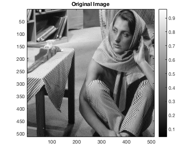
TEM.png
im_r = myLinearContrastStretching(im2);
printImage(im2double(im2), 'Original Image');
printImage(im_r, 'Linear Contrast Stretching output of Image');
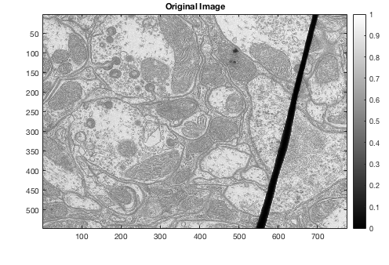 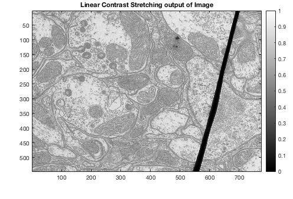
canyon.png
im_r = myLinearContrastStretching(im3);
printImage(im2double(im3), 'Original Image');
printImage(im_r, 'Linear Contrast Stretching output of Image');
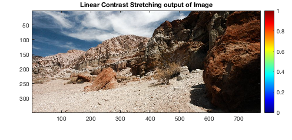
church.png
im_r = myLinearContrastStretching(im5);
printImage(im2double(im5), 'Original Image');
printImage(im_r, 'Linear Contrast Stretching output of Image');
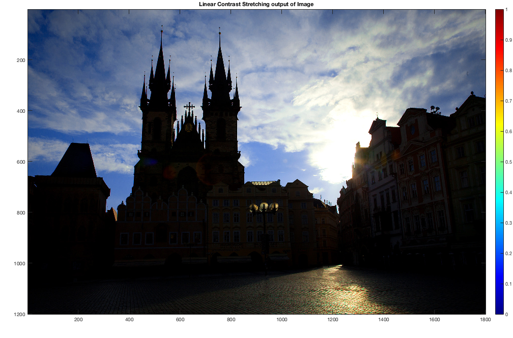
Problem 2(b) Histogram Equalization (HE)
barbara.png
im_r = myHE(im1);
printImage(im2double(im1), 'Original Image');
printImage(im_r, 'Histogram Equalized (HE) output of Image');

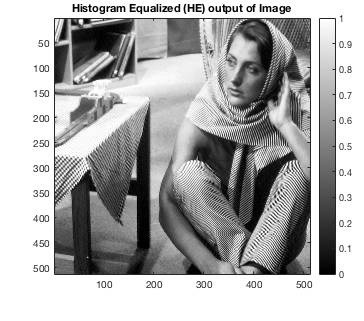
TEM.png
im_r = myHE(im2);
printImage(im2double(im2), 'Original Image');
printImage(im_r, 'Histogram Equalized (HE) output of Image');
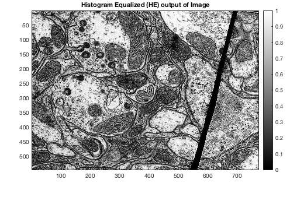
canyon.png
im_r = myHE(im3);
printImage(im2double(im3), 'Original Image');
printImage(im_r, 'Histogram Equalized (HE) output of Image');
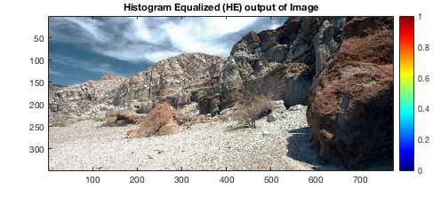
church.png
im_r = myHE(im5);
printImage(im2double(im5), 'Original Image');
printImage(im_r, 'Histogram Equalized (HE) output of Image');
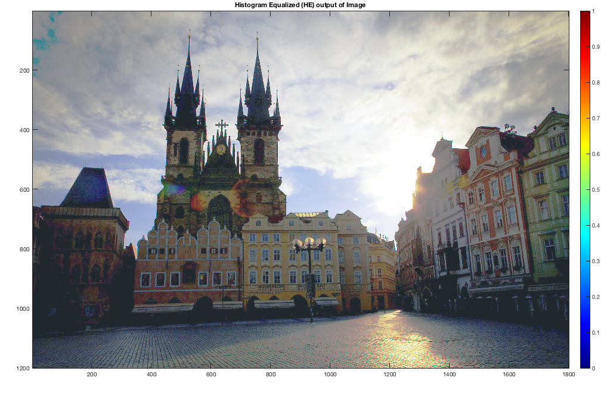
Problem 2(c) Histogram Matching (HM)
retina.png
im_r1 = myHM(im4_input, im4_input_mask, im4_ref, im4_ref_mask);
im_r2 = myHE_with_mask(im4_input, im4_input_mask);
printImage(im2double(im4_input), 'Original Image');
printImage(im_r1, 'Histogram Matched (HM) output of Image');
printImage(im_r2, 'Histogram Equalized (HE) output of Image');
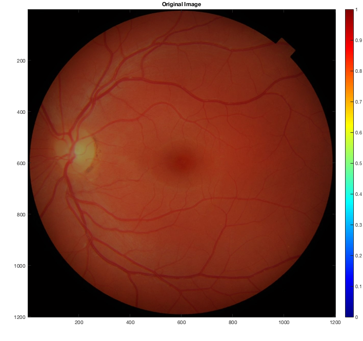 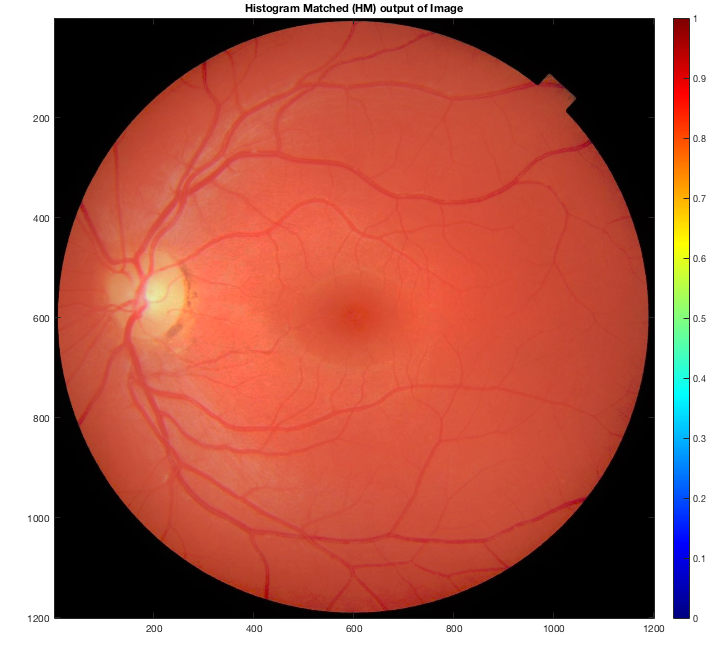 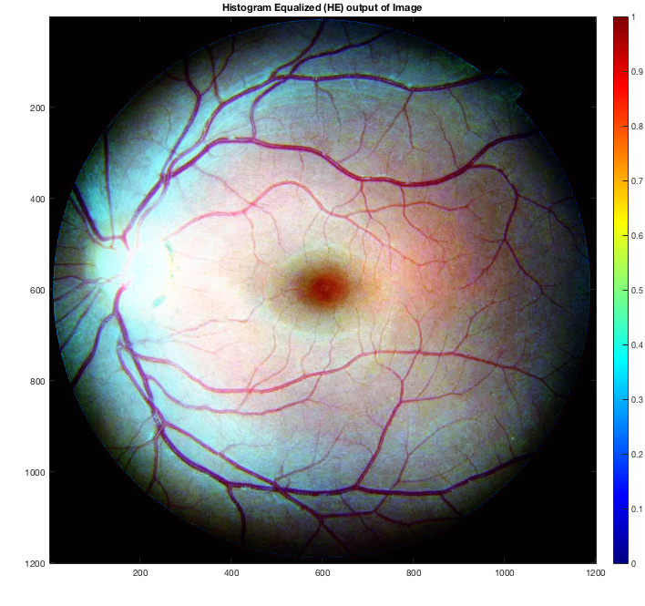
Problem 2(d) Adaptive Histogram Equalization (AHE)
barbara.png
printImage(im2double(im1), 'Original Image');
im_r = myAHE(im1,225);
printImage(im_r, 'AHE with window size=225 (tuned)');
im_r = myAHE(im1,451);
printImage(im_r, 'AHE with window size=451 (larger)');
im_r = myAHE(im1,99);
printImage(im_r, 'AHE with window size=99 (smaller)');
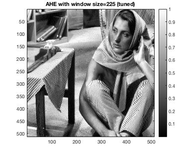 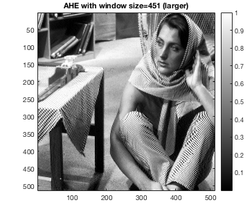 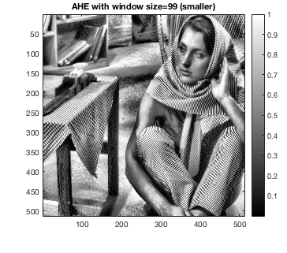
TEM.png
printImage(im2double(im2), 'Original Image');
im_r = myAHE(im2,201);
printImage(im_r, 'AHE with window size=201 (tuned)');
im_r = myAHE(im2,401);
printImage(im_r, 'AHE with window size=401 (larger)');
im_r = myAHE(im2,99);
printImage(im_r, 'AHE with window size=99 (smaller)');
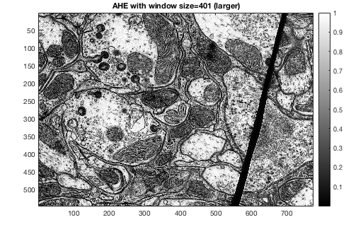 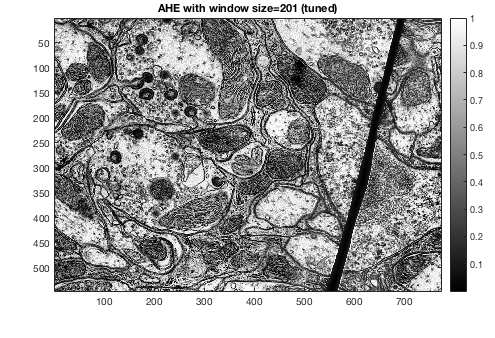 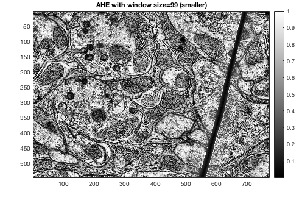
canyon.png
printImage(im2double(im3), 'Original Image');
im_r = myAHE(im3,151);
printImage(im_r, 'AHE with window size=151 (tuned)');
im_r = myAHE(im3,301);
printImage(im_r, 'AHE with window size=301 (larger)');
im_r = myAHE(im3,51);
printImage(im_r, 'AHE with window size=51 (smaller)');
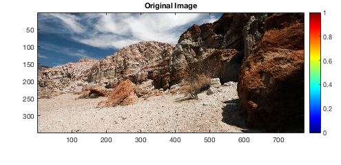 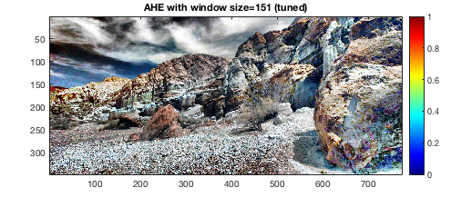 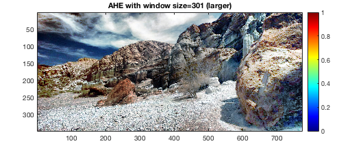 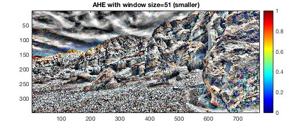
Problem 2(e) Contrast Limited Adaptive Histogram Equalization (AHE)
barbara.png
clahe_image1 = myCLAHE(im1, 225, 0.008);
clahe_image1_ = myCLAHE(im1, 225, 0.004);
printImage(im2double(im1),'Original Image : barbara.png');
printImage(clahe_image1,'CLAHE with window size = 225 and threshold = 0.008');
printImage(clahe_image1_,'CLAHE with window size = 225 and threshold = 0.004');
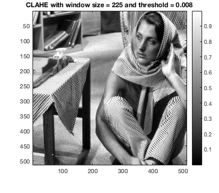 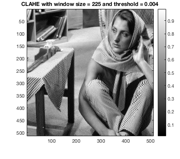
TEM.png
clahe_image2 = myCLAHE(im2, 201, 0.008);
clahe_image2_ = myCLAHE(im2, 201, 0.004);
printImage(im2double(im2),'Original Image : TEM.png');
printImage(clahe_image2,'CLAHE with window size = 201 and threshold = 0.008');
printImage(clahe_image2_,'CLAHE with window size = 201 and threshold = 0.004');
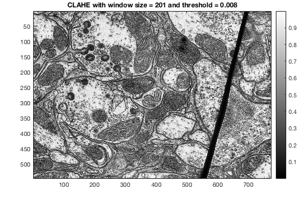 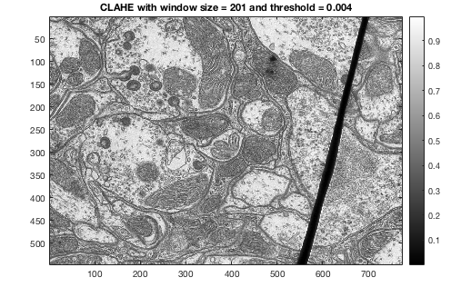
canyon.png
clahe_image3 = myCLAHE(im3, 155, 0.01);
clahe_image3_ = myCLAHE(im3, 201, 0.004);
printImage(im2double(im3),'Original Image : canyon.png');
printImage(clahe_image3,'CLAHE with window size = 155 and threshold = 0.01');
printImage(clahe_image3_,'CLAHE with window size = 155 and threshold = 0.005');
toc;
Elapsed time is 710.522861 seconds.
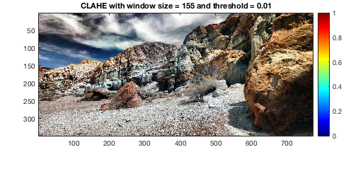 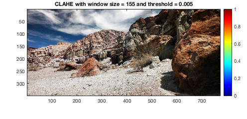